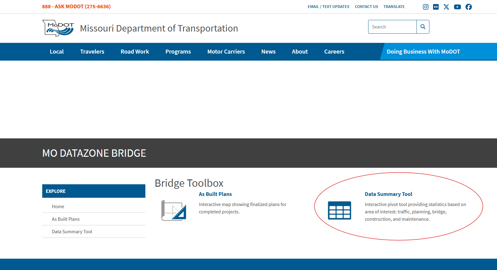
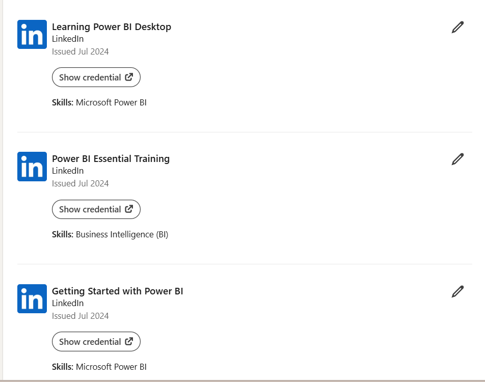

Case Study
Statewide Briddge Condition Dashboard
A statewide Power BI reporting solution that transformed bridge condition data into interactive, decision-ready dashboards for transportation planning and asset management.
Dashboard walkthrough demonstrating statewide bridge condition reporting, interactive filtering, and executive analytics.
The Challenge
Find a way to take data from TMSPROD and provide an engaging data-comprehension experience. This is how the data used to look. A spreadsheet of data is difficult to comprehend instantly. From being self-taught to creating a new tool, this development led to the formation of a new department—the Analytics Group.

Where bridge data is stored.
1 / 4

Interactive bridge condition dashboard overview.
1 / 4
The Solution
The approach was to learn as much and as quickly as possible. This was completely new. After teaching myself the basics, I created data connections and measures. Once the data made sense and the information management required was ready, the design phase began. Large buttons and clearly defined sections were created while maintaining a cohesive experience. Filters and color were prioritized. The usual blue-and-gray documentation style felt tiring, so I explored something new. The process included experimenting with icons and making design decisions that made the dashboard feel interactive and engaging. One of the main goals was to let management see what was possible.
Impact & Outcomes
The project demonstrated how bridge data could be transformed from rows and columns into visual, interactive reporting. It also helped establish the value of analytics within the organization and contributed to the creation of the Analytics Group. This tool is now in regular use, but what I would change in the future is make the map more integrated with ArcGIS. Currently, it uses the ArcGIS for Power BI vizual. I think given more time to figure out how to integrate better layers from ArcGIS and making sure it does not exceed the constraint Power BI has with a load max of 10,000 points, this map has the potential to be more detailed.
Project Details
Tools & Technologies
Power BI, SharePoint, Excel, ArcGIS, Oracle
Timeline
3 months
Key Results
Innovations Challenge Finalist
Analytics Group Created
Faster Bridge Count and Condition Overview